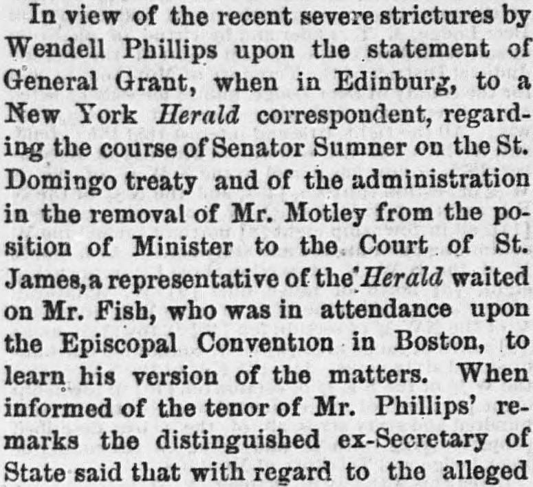

Wendell Phillips upon the statement of General Grant, when in EdinburgWendell Phillips sobre la declaración del general Grant, cuando estuvo en Edimburgo
The New North-West. Deer Lodge, Mont., November 9, 1877. Page 4. Published by J.H. Mills. A weekly newspaper, 1869–1897.The New North-West. Deer Lodge, Mont., 9 de noviembre de 1877. Página 4. Publicado por J.H. Mills. Periódico semanal, 1869–1897. View the originalVer el original

 See the full pageVer la página completa
See the full pageVer la página completa
Following remarks by Wendell Phillips regarding General Grant's statements on the St. Domingo treaty, a New York Herald representative interviewed ex-Secretary of State Fish in Boston. Fish stated that Senate records show multiple drafts of treaties remained in the hands of the Foreign Affairs Committee under Senator Sumner for months—and in some cases over two years—whereas the entire batch was disposed of within four months after Sumner's retirement.A raíz de las manifestaciones de Wendell Phillips sobre las declaraciones del general Grant acerca del tratado de Santo Domingo, un reportero de The New York Herald entrevistó en Boston al exsecretario de Estado Fish. Este afirmó que las actas del Senado prueban que numerosos proyectos de tratados permanecieron estancados en manos del Comité de Relaciones Exteriores bajo la presidencia del senador Sumner durante meses —y en ciertos casos más de dos años—, en tanto que la totalidad de ellos se despachó a los cuatro meses de su salida.
FULL TEXT:TEXTO COMPLETO:
GRANT AND SUMNER.GRANT Y SUMNER.
Ex-Secretary Fish in Defence of His Late Chief.El ex Secretario Fish en defensa de su difunto jefe.
ANOTHER VERSION OF THE AFFAIR.OTRA VERSIÓN DEL ASUNTO.
BOSTON, Oct. 19, 1877.BOSTON, 19 de octubre de 1877.
In view of the recent severe strictures by Wendell Phillips upon the statement of General Grant, when in Edinburg, to a New York Herald correspondent, regarding the course of Senator Sumner on the St. Domingo treaty and of the administration in the removal of Mr. Motley from the position of Minister to the Court of St. James, a representative of the Herald waited on Mr. Fish, who was in attendance upon the Episcopal Convention in Boston, to learn his version of the matters. When informed of the tenor of Mr. Phillips’ remarks the distinguished ex-Secretary of State said that with regard to the alleged negligence of the late Mr. Sumner while Chairman of the Foreign Affairs Committee, it was a fact that was susceptible of proof from the Senate records, that drafts of treaties from eight to eleven in number, remained in the hands of the committee for several months; some of them, as near as Mr. Fish could remember, for more than two years. Mr. F. did not impute this delay of public business to negligence on the part of Mr. Sumner. The fact, however, remained that business was delayed, together with another fact, that after Mr. Sumner’s retiracy the entire batch of treaties was disposed of in less than four months.En vista de las recientes severas críticas de Wendell Phillips sobre la declaración del general Grant, cuando estaba en Edinburg, a un corresponsal del New York Herald, referente al curso del Senador Sumner en el tratado de Santo Domingo y al de la administración en la remoción del Sr. Motley de la posición de Ministro ante la Corte de St. James, un representante del Herald visitó al Sr. Fish, quien estaba asistiendo a la Convención Episcopal en Boston, para conocer su versión de los asuntos. Cuando fue informado del tenor de los comentarios del Sr. Phillips, el distinguido ex Secretario de Estado dijo que con respecto a la alegada negligencia del difunto Sr. Sumner mientras era Presidente del Comité de Relaciones Exteriores, era un hecho susceptible de prueba por los registros del Senado, que borradores de tratados de ocho a once en número, permanecieron en manos del comité por varios meses; algunos de ellos, según el Sr. Fish podía recordar, por más de dos años. El Sr. F. no imputó esta demora de los negocios públicos a negligencia por parte del Sr. Sumner. El hecho, sin embargo, permanecía de que los negocios fueron demorados, junto con otro hecho, de que después del retiro del Sr. Sumner todo el lote de tratados fue despachado en menos de cuatro meses.